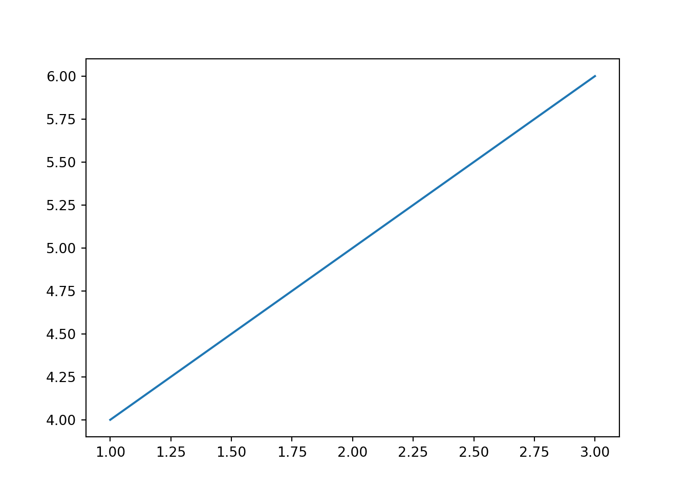

Welcome to this Quarto demo! Quarto is a powerful tool for creating dynamic documents, presentations, and websites. In this demo, I’m going to cover some basic features.
Code Chunks
You can include code chunks in various coding languages. Here’s an example of an R code chunk:
# This is an R code chunksummary(cars)
speed dist
Min. : 4.0 Min. : 2.00
1st Qu.:12.0 1st Qu.: 26.00
Median :15.0 Median : 36.00
Mean :15.4 Mean : 42.98
3rd Qu.:19.0 3rd Qu.: 56.00
Max. :25.0 Max. :120.00
# This R chunk makes a graphplot(cars)
But we can also code in python:
# This is a Python code chunkimport numpy as npprint(np.mean([1, 2, 3, 4, 5]))
3.0
# This Python chunk makes a graphimport matplotlib.pyplot as pltplt.plot([1, 2, 3], [4, 5, 6])plt.show()

Reports
The markdown element of Quarto allows you to format text with italic emphasis and bold emphasis. You can also add superscripts2, subscripts2, and display in-text code verbatim. You can also strikethrough text and present it in small caps.
Johns, Gemma, Bethan Whistance, Sara Khalil, Megan Whistance, Bronwen Thomas, Mike Ogonovsky, and Alka Ahuja. 2022. “Digital NHS Wales: A Coding Reliability Analysis Based on the Voices of 22978 Patients and Clinicians on the Benefits, Challenges and Sustainability of Video Consulting.”BMJ Open 12 (4): e057874. https://doi.org/10.1136/bmjopen-2021-057874.